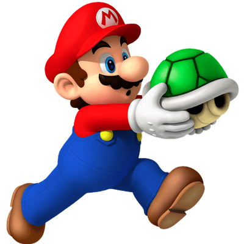

Mario fue creado por el diseñador japonés Shigeru Miyamoto en 1981, donde su primera aparición fue en Donkey Kong llevando el nombre de Jumpman en un inicio, portando la simbólica gorra roja con la que todos lo reconocemos.
Mario ha recorrido un largo camino desde que entró en nuestra conciencia a través de su aspecto general no ha cambiado mucho en las últimas dos décadas. Mario se ha ramificado en juegos de deportes, RPGs, juegos de fiesta, y más, pero sigue siendo predominantemente reconocido por sus juegos de plataformas.